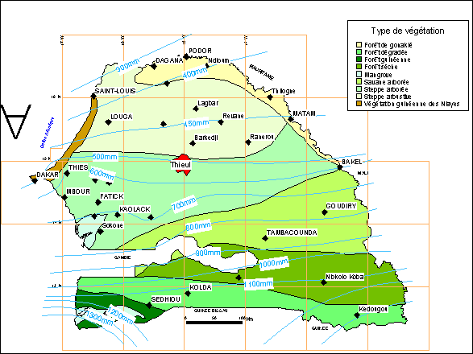
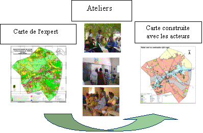

|
ThieulMulti usage de l'espace et des ressources autour d'un forage au SahelAuteurs: Ibra Touré, Alassane Bah, Christophe Le Page, Patrick d'Aquino D'une superficie 1 031.46 km2, l'unité pastorale de Thieul est située dans la réserve sylvo pastorale du Ferlo à une soixantaine de kilomètres au sud-est de Dahra (Carte 1). Ce terroir adjacent au ranch de Doli et à la limite du bassin arachidier est au cœur de l'expansion de l'agriculture et son corollaire à savoir la réduction des terres de parcours et les différends entre populations sédentaires et pasteurs. La population est très diversifiée, elle est composée de trois grands groupes ethniques : les Peul, les Seereer et les Wolof. De par sa localisation, ce terroir agro sylvo pastoral constitue une zone tampon aux plans morpho-pédologique, climatique et socio-économique qui lui confère toute sa diversité. Le climat local est de type sahélien avec quelques influences du domaine soudanien comme en atteste l'immense couverture herbacée en saison humide. Les ressources hydriques sont constituées d'une part par les points d'eau permanents (puits, forage et antennes de forage) et d'autre part des mares et vallées situées autour de Thieul avec un écoulement temporaire pluvial. Ces caractéristiques bioclimatiques spécifiques continuent d'attirer de nouvelles populations d'agriculteurs dont le nombre de campement a augmenté de 70% entre 1980 et 2000 contre seulement 30% entre 1935 et 1980. Ce flux de migrants a provoqué un accroissement et une extension des zones de cultures de 13% entre 1980-1999 matérialisé par une fragmentation des paysages sur le front agricole et une réduction des terres de parcours du sud au nord. Aujourd'hui plusieurs projets de développement existent dans la zone, autour des aires de desserte de forage, pour suivre l'état des ressources naturelles et proposer des aménagements de l'espace et des ressources. Le projet d'appui à l'élevage (Papel) lancé en 1993 préconisait une approche participative et décentralisée à l'échelle des communautés rurales pour prendre en compte les préoccupations de l'ensemble des acteurs en vue d'une gestion concertée des ressources autour des forages pastoraux à haut débit. Pour ce faire, les premiers outils de planification et de gestion négociés entre les différents acteurs ont été élaborés et testés autour d'unité pastorale (UP). Ce concept d'unité pastorale est constitué de l'espace et de l'ensemble des ressources polarisés par un forage pastoral.  Carte :
Carte du Sénégal Mais, malgré les efforts consentis et les plans réalisés, les résultats demeurent mitigés sur le terrain. Ce constat de non appropriation d'acquis en termes d'outils et de techniques de gestion des ressources naturelles, pose le problème de l'inadéquation ou de l'inadaptation des solutions proposées qui occultent dans leur conception les perceptions, les connaissances et les pratiques ainsi que les besoins des populations locales. Comment définir leurs besoins et intégrer leurs connaissances spatiales dans les plans de gestion des ressources, sous quelle forme et à quelle échelle ? Dans quel cadre les concevoir et les utiliser avec les acteurs-décideurs (pasteurs, agro-pasteurs, agriculteurs, leaders d'opinions, agents d'état…) ? Autrement dit comment optimiser leur utilisation dans les processus de négociation ? Pour mieux appréhender les interactions entre espaces - ressources - acteurs, nous nous sommes fixés deux objectifs suivants : (i) mettre au point un SMA pour tester des hypothèses et des scénarios d'intervention ou d'événements afin de mieux affiner les contours d'une approche globale et pluridisciplinaire pour la gestion d'espace et de ressources partagés ; (ii) élaborer des cadres et approches méthodologiques de concertation et/ou de négociation avec les acteurs pour améliorer les processus de décision sur les ressources. La finalité est de créer des outils et cadres de
concertation afin de traduire le plus fidèlement
possible les besoins des populations dans les projets de
développement pour une gestion efficiente des ressources
naturelles Démarche: "Approche Participative" (Cliquer sur les images
pour les agrandir)
Simulateur
«Thieul»
Figure 11 : Interface de paramétrage de la pluviométrie
Pour en savoir plus,
contacter les auteurs
ReferencesBah A., Touré I., Le Page C., Bousquet F., Diouf A. 2001. Un outil de simulation multi-agents pour comprendre le multi usage de l'espace et des ressources autour d'un forage au Sahel. Le cas de Thieul au Sénégal. In Th. Libourel Ed., Géomatique et espace rural, SIGMA, Actes des journées de Cassini, Montpellier 26-28 septembre 2001, pp 105-117. Touré I., Bah A. D'Aquino P., Dia I. 2003. Cartes à dire d'experts, cartes à dire d'acteurs : vers une approche partagée des modèles de représentations spatiales d'espaces agropastoraux sahéliens. Organisation spatiale et gestion des ressources et des territoires ruraux. Actes du colloque, 25-27 février 2003, Montpellier, France. Bah A; Touré I.,Le Page Ch. 2003 An Agent-Based Model tool for multi-agent simulation for Understanding the Multiple Uses of space Land and Resources Around a Drilling Sites in the Sahel. Modsim 2003 International Congress on Modelling and Simulation,July 2003 in Townsville, Queensland, Australia A. Bah . I.Touré; Ch. Le Page, S. Baldé, D. Badiane : Contribution de systèmes multi-agents pour la compréhension du multi usage de l'espace et des ressources autour d'un forage au Sahel. Le cas de Thieul au Sénégal. (article accepté et à paraître dans le Journal des Sciences pour l'Ingénieur de l'Ecole Supérieure Polytechnique de l'Université de Cheikh Anta Diop de Dakar).
|
|
{kind=link}